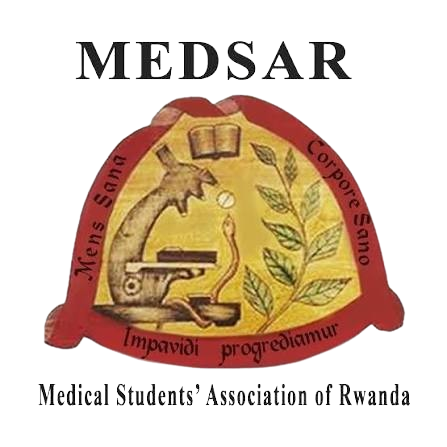

Medwell Health Magazine
Africa's Leading Youth-Driven Multilingual Health Media Platform.
medwellnews.comHealthcare providers' health matters too.
The people caring for the sick deserve care too.
MEDWELL Club focuses on the wellbeing of medical students and healthcare professionals, because the people caring for the sick deserve care too. We create spaces for wellness activities, sports, peer connection, mental and emotional wellbeing, medical education, research, advocacy, professional development, digital initiatives and interests beyond medicine.
Africa bears more than a quarter of the global disease burden while accounting for only about 3% of the global health workforce. Burnout in this system is not a badge of honor, it is a threat to patient safety, staff retention and the sustainability of healthcare systems.
Africa CDCMEDWELL Club isn't simply organizing occasional events. It's building a culture of healthier medical education and healthier healthcare professionals.
Self-care should begin during medical school, not after graduation.
Wellbeing is connected to patient safety and professional sustainability.
Students need spaces for movement, reflection, connection and creativity.
Medical students are more than their academic and clinical responsibilities.
Individual self-care matters, but supportive institutions and systems matter too.
Healthier students are better positioned to become healthier healthcare professionals.
Africa's Leading Youth-Driven Multilingual Health Media Platform.
medwellnews.comWelcome to Medwell Podcast. We break down the topics that matter most, wellness, first aid, sexual and reproductive health, and the biggest trends in health news, so you always know what's real, what's helpful, and what's new. Empowering you to live smarter, healthier and more confidently.
YouTube · @THEMEDWELLPODCASTOur Medwell Club family volunteers as writers, editorial team members, hosts and speakers on these health media platforms.

There's a place in MEDWELL Club at every stage of the journey, as a student, a practicing professional, or simply someone who believes healthcare providers deserve care too.